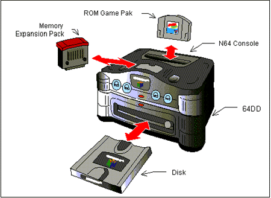

The figure below shows the general configuration of the N64 Control Deck and the 64DD System.

64DD is a dedicated magnetic disk drive that plugs into the expansion connector on the bottom of the N64 Control Deck.
Its total disk capacity is 64MBytes, enabling the creation of huge games not possible with just a ROM cartridge.
Part of the disk can be designated as a writable region from the game application, meaning the disk can also be used to back up player data. In addition, by exchanging data stored on disks, games can be broadly expanded.
Nintendo® Confidential
Copyright © 1999
Nintendo of America Inc. All Rights Reserved
Nintendo and N64 are registered trademarks of Nintendo
Last Updated March, 1999